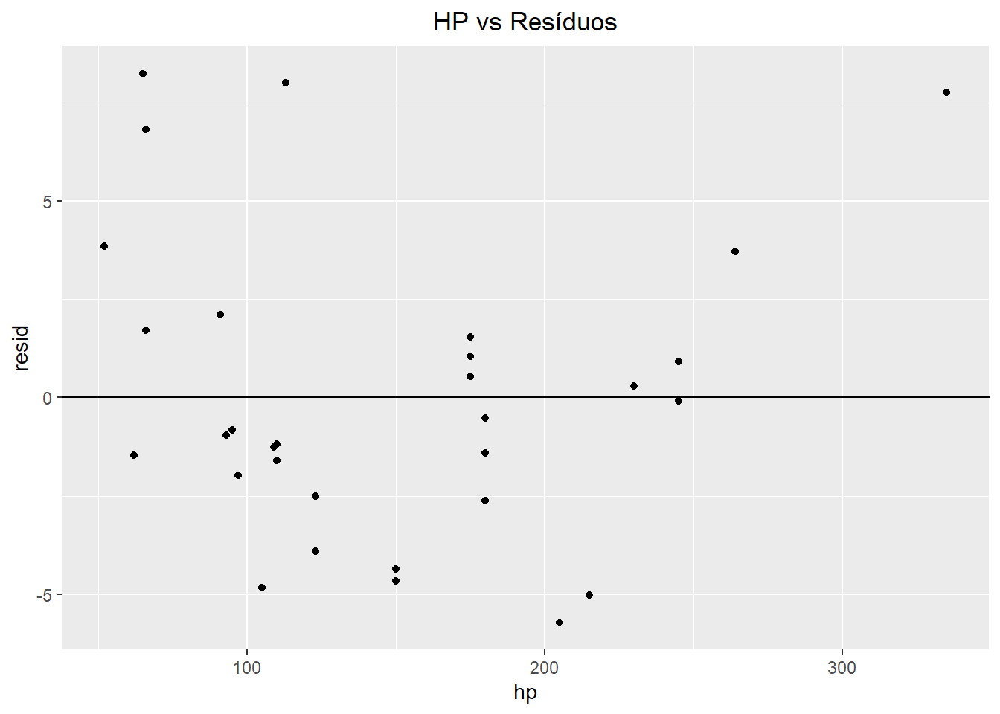

Capítulo 10 Regressão Linear Simples
Em problemas de aprendizagem supervisionada regressão linear é um dos algoritmo que inicialmente trabalhamos, pela sua praticidade em extrair informações entre as covariáveis para gerar insights e ser de fácil visualização.
Consideremos uma variável resposta \(Y\) através de uma variável preditora \(X\). No contexto da regressão nós assumimos que exista uma relação linear entre \(X\) e \(Y\), qual pode ser escrita da seguinte forma
\[ Y \approx \beta_0 + \beta_1 X. \]
Onde \(\approx\) significa que \(Y\) é aproximadamente uma soma linear de \(X\). Como exemplo, no conjunto mtcars \(Y\) pode ser a variável mpg(minhas por galão) enquanto \(X\) a variável hp(cavalos de potência).
\[ \text{mpg} \approx \beta_0 + \beta_1 \text{hp}. \]
Nestas equações os parâmetros \(\beta_0\) e \(\beta_1\) são duas constantes desconhecidas que representam o intercepto e o coeficiente angular de uma curva. Chamamos estes de coeficientes ou parâmetros do modelo de regressão linear.
10.1 Criando o Modelo & Estimando Seus Coeficientes
Na prática os parâmetros do modelo são desconhecidos. Para estíma-los consideremos que temos um conjunto de dados com \(n\) linhas:
\[ (x_1, y_1), (x_2, y_2), \dots, (x_n, y_n) \]
Cada um representando um valor para as colunas \(X\) e \(Y\). Nosso objetivo é estimar \(\beta_0\) e \(\beta_1\) de modo que o modelo linear realize boas previsões, isto é
\[ y_i \approx \beta_0 + \beta_1x_i, i=1,\dots, n \]
Desta forma estamos interessados na reta que melhor se aproxime aos pontos do conjunto de dados:
ggplot(mtcars, aes(x = hp, y = mpg)) +
geom_point() 
Podemos criar visualmente esta reta utilizando o pacote ggplot2:
ggplot(mtcars, aes(x = hp, y = mpg)) +
geom_point() +
geom_smooth(formula = y ~ x,method = 'lm', se = FALSE) +
labs(title = 'Regressão linear no conjunto mtcars')Podemos utilizar a função lm do próprio R para ajustarmos o modelo:
# No primeiro parâmetro temos a relação que queremos pro
# conjunto de dados
# Neste caso estamos querendo prever mpg através de hp
# No segundo parâmetro inserimos o conjunto de dados
mtcars_lm <- lm(mpg ~ hp, data = mtcars)São várias as vantagens de utilizar a função lm - veremos mais adiante como ajustar o modelo com várias conjuntos do banco de dados. Além disso, a função pode realizar previsões em novos conjuntos, além de carregar diversas informações estatísticas importantes:
summary(mtcars_lm)##
## Call:
## lm(formula = mpg ~ hp, data = mtcars)
##
## Residuals:
## Min 1Q Median 3Q Max
## -5.7121 -2.1122 -0.8854 1.5819 8.2360
##
## Coefficients:
## Estimate Std. Error t value Pr(>|t|)
## (Intercept) 30.09886 1.63392 18.421 < 2e-16 ***
## hp -0.06823 0.01012 -6.742 1.79e-07 ***
## ---
## Signif. codes: 0 '***' 0.001 '**' 0.01 '*' 0.05 '.' 0.1 ' ' 1
##
## Residual standard error: 3.863 on 30 degrees of freedom
## Multiple R-squared: 0.6024, Adjusted R-squared: 0.5892
## F-statistic: 45.46 on 1 and 30 DF, p-value: 1.788e-07As mais importantes de observamos em um primeiro momento são os coeficientes estimados da nossa curva, neste caso o modelo ajustado é dado por:
\[ \text{mpg} \approx 30.09886 - 0.06823 \text{hp}. \]
Isto significa que ao acréscimo de 1 cavalo de potência em um carro, neste conjunto de dados, temos em média uma diminuição na quantidade de milhas feita por galão, ou seja, o carro acaba gastando mais combustível.
Mas afinal, qual é a matemática por trás deste problema?
Apesar de termos funções prontas para realizarmos a modelagem, é importante entender a sua criação, pois diversos conceitos partem desta. Para elaborarmos o modelo utilizamos a minimização dos mínimos quadrados.
Para isto partimos do modelo comentado inicialmente:
\[ Y \approx \beta_0 + \beta_1 X. \]
Neste modelo, para cada linha do nosso conjunto de dados, \(y_i\), teremos uma previsão, \(\hat{y_i}\). Chamamos de i-ésimo resíduo o erro cometido entre o valor real de uma observação e o valor ajustado do modelo em uma observação:
\[ e_i = y_i - \hat{y_i} \]
data.frame('hp' = mtcars$hp, 'mpg' = mtcars$mpg,
'fitted' = mtcars_lm$fitted.values) %>%
ggplot(aes(x = hp, y = mpg)) +
geom_point() +
geom_smooth(formula = y ~ x,method = 'lm', se = FALSE) +
geom_segment(aes(x = hp, y = mpg,
xend = hp, yend = fitted)) +
labs(title = 'Regressão linear no conjunto mtcars')Definimos como soma dos quadrados dos resíduos o valor
\[ \text{RSS} = e_1^2+e_2^2+\dots + e_n^2, \]
Estamos interessados na reta que tenha a menor soma dos quadrados dos resíduos. Para avançarmos nesta procura, relembremos que se denotarmos \(\hat{y_i}\) como sendo a previsão do modelo para i-ésima observação, então:
\[ \hat{y_i} = \beta_0 + \beta_1 x_i, i =1,\dots, n \]
Assim, podemos reescrever os resíduos da seguinte maneira:
\[ \text{RSS} = (y_1- \beta_0-\hat{\beta_1}x_1)^2 + (y_2- \beta_0-\hat{\beta_1}x_2)^2 +\cdots + (y_n- \beta_0-\hat{\beta_1}x_n)^2 \]
Assim, para criar o modelo basta considerarmo \(\hat{\beta_0}\) e \(\hat{\beta_1}\) que minimizem esta soma. Isto é facilmente resolvido com conceitos de Cálculo 1, onde os melhores parâmetros são:
\[ \hat{\beta_1} = \dfrac{\sum_{i=1}^n (x_i - \overline{x})(y_i- \overline{y})}{\sum_{i=1}^n (x_i-\overline{x})^2}, \quad \hat{\beta_0}=\overline{y} - \hat{\beta_1}\overline{x}. \]
IMPORTANTE: Aqui não precisamos entender diretamente como a fórmula dos parâmetros é encontrada, mas sim o objetivo para chegarmos até essa fórmula.
Não é importante lembrar a fórmula para encontrar os parâmetros, mas sim que a reta é encontrada de forma a minimizarmos a soma dos quadrados dos resíduos.
Podemos então realizarmos a nossa própria função para obter o nosso modelo de regressão:
linear_regression <- function(X, Y){
numerador = sum((X - mean(X)) * (Y - mean(Y)))
denominador = sum((X - mean(X))**2)
beta_1 = numerador/denominador
beta_0 = mean(Y) - beta_1 * mean(X)
return(data.frame('beta_0' = beta_0,
'beta_1' = beta_1))
}
linear_regression(X = mtcars$hp, Y = mtcars$mpg)## beta_0 beta_1
## 1 30.09886 -0.0682282810.2 A Poeira Debaixo do Tapete
A elaboração de um modelo de regressão linear é extremamente simples. Porém, existem diversas condições para a criação deste modelo. Estas condições são teóricas e não irão acarretar em um erro na hora de executar o script no R, porém podem acarretar em erro de interpretação e previsão para dados futuros.
As 3 condições que devemos ter para um modelo de regressão linear são:
- Linearidade nos dados;
- Erros normalmente distribuídos;
- Erros com variância igual (Homocedasticidade).
10.2.1 Linearidade nos Dados
Linearidade é a hipótese de que de fato há uma relação linear entre os dados para que o modelo esteja bem ajustado, considere o seguinte exemplo:
ggplot(regressao_nao_linear, aes(x = X, y = y)) +
geom_point() +
geom_smooth(method = 'lm', formula = 'y ~ x', se = F) +
labs(title = 'Pontos que não possuem relação linear')É evidente que a reta ajustada aqui é péssima. Para resolvermos este problema, neste exemplo em específico, podemos particionar o conjunto de dados em dois: um para valores positivos de \(X\) e outro para negativos.
Não há uma única maneira para lidar com a não linearidade dos dados, em regressão linear múltipla, onde utilizamos mais de uma coluna para prever a variável resposta podemos realizar operações de forma a lidar com a falta de linearidade dos dados:
# Utilização das colunas X e X^2 para a reta de regressão linear:
ggplot(regressao_nao_linear, aes(x = X, y = y)) +
geom_point() +
geom_smooth(method = 'lm', formula = 'y ~ x + I(x^2)', se = F) +
labs(title = 'Pontos que não possuem relação linear')IMPORTANTE: Regressão Linear possui este nome pela linearidade em seus coeficientes, no exemplo acima temos o seguinte modelo:
\[ Y = 0.0009678 -0.0032584 X + 0.9931674 X^2 \]
Assim, apesar de utilizarmos os elementos de uma coluna ao quadrado, os parâmetros estimados estão no modelo de forma linear:
\[ Y = \beta_0 + \beta_1 X + \beta_2 X^2 \]
veremos mais sobre isso em regressão linear múltipla.
10.2.1.1 Coeficiente de Correlação de Pearson
Podemos exprimir a relação linear entre duas colunas em um valor numérico, qual é de mais fácil interpretação quando estamos lidando com várias colunas ao mesmo tempo.
- Definimos coeficiente de correlação de Pearson entre \(X\) e \(Y\) o valor
\[ R = \dfrac{\sum_{i=1}^n (x_i-\overline{x})(y_i-\overline{y})}{\sqrt{\sum_{i=1}^n (x_i-\overline{x})^2 \sum_{i=1}^n (y_i-\overline{y})^2}}. \]
Qual possui as seguintes propriedades:
- Descreve o quão forte é a relação linear entre duas variáveis;
- O sinal da correlação indica a direção da associação;
- Sempre varia de -1 a 1;
- Não é afetado por mudança na escala das variáveis;
- É sensível a outliers.
Existem várias formas de observar a correlação entre colunas do conjunto de dados, uma que me agrada é a função ggpairs do pacote GGally:
ggpairs(mtcars[c('hp', 'mpg')])10.2.2 Normalidade dos Erros
Quando criamos o modelo
\[ Y \approx \beta_0 + \beta_1 X. \]
normalmente assumimos que a aproximação pode ser corrigida por uma variável aleatória \(\varepsilon\) que possui distribuição normal, isto é:
\[ Y = \beta_0 + \beta_1 X +\varepsilon. \]
Em outras palavras, o erro de medição possui distribuição normal.
Mas afinal, o que é distribuição é uma distribuição? e mais ainda, o que tem de importante dela ser normal?
Sendo bem superficiais, tipos de distribuições surgem da forma em que os dados são distribuídos. Em particular, a distribuição normal é importante pois aparece em diversos problemas reais, além de possuir ótimas propriedades matemáticas.
Dentre estas estamos interessados que:
A média/mediana dos nossos erros seja 0 - a aleatoridade deve acontecer tanto de forma que estejamos superestimando e subestimando a variável \(Y\);
Homocedasticidade: os erros variem de forma igual - a aleatoridade de cada medição varia dentro de um alcance, imagine errar o peso de pessoas por gramas e depois começar a termos erros na escala de kg no mesmo conjunto de dados.
Existem diversas formas para confirmar a normalidade dos erros, assim como a homocedasticidade:
- Histograma da variável resposta: Maneira inicial, quando assumimos que os resíduos possuem distribuição normal temos, como consequência, a normalidade da variável resposta que estamos tentando prever, qual pode ser observada pelo seu histograma:
ggplot(mtcars, aes(x = mpg)) +
geom_histogram(bins = 12,
colour = 'black')- Histograma dos resíduos: maneira mais intuitiva, observamos se o histograma dos resíduos possuí comportamento normal
mtcars_residuos <- data.frame(resid = mtcars_lm$residuals)
ggplot(mtcars_residuos, aes(x = resid)) +
geom_histogram(bins = 10, colour = 'black')- Q-Q Plot: Gráfico que compara os quantis de uma amostra com os de uma distribuição de interesse, para que a hipótese se sustente os pontos devem estar próximos da reta identidade:
ggplot(mtcars_residuos, aes(sample = resid)) +
stat_qq() +
geom_qq_line() +
xlab('Teórico') +
ylab('Amostral') +
ggtitle('Q-Q Plot')Testes de Hipótese: é um conceito da inferência estatística, nele confrontramos duas hipóteses e então elaboramos um teste para testá-las. No nosso contexto as hipóteses a serem consideradas são:
\(H_0\) (Hipótese nula): A distribuição dos dados é normal;
\(H_1\) (Hipótese alternativa): A distribuição dos dados não é normal.
Cada teste possui duas informações: uma estatística, número que representa um valor de referência a uma distribuição e, mais importante, um p-valor, qual representa a probabilidade de obtermos a amostra da distribuição caso consideremos a hipótese nula como verdadeira:
library(nortest) # Testes de Normalidade
shapiro.test(mtcars_residuos$resid) # Shapiro-Wilk##
## Shapiro-Wilk normality test
##
## data: mtcars_residuos$resid
## W = 0.92337, p-value = 0.02568cvm.test(mtcars_residuos$resid) # Cramer-von Mises##
## Cramer-von Mises normality test
##
## data: mtcars_residuos$resid
## W = 0.11828, p-value = 0.05976lillie.test(mtcars_residuos$resid) # Lilliefors##
## Lilliefors (Kolmogorov-Smirnov) normality test
##
## data: mtcars_residuos$resid
## D = 0.11669, p-value = 0.3257Rejeitamos a hipótese nula caso o p-valor esteja abaixo de \(0.1,0.05\) ou \(0.01\).
IMPORTANTE: a definição formal de p-valor é a probabilidade de que a estatística seja igual ou maior do que a encontrada, e é um pouco mais abstrata. Caso forem estudar sobre testes de hipótese, não se assuste com outras terminologias.
- Gráfico de covaríaveis x resíduos: Importante para visualizar se os resíduos possuem a mesma variância. Caso isto seja verdadeiro, os pontos estão dentro de um “retângulo imaginário” dentro do eixo y, caso contrário temos gráficos em forma de funil.
data.frame('hp' = mtcars$hp,
'resid' = mtcars_residuos$resid) %>%
ggplot(aes(x = hp, y = resid)) +
geom_point() +
geom_abline(slope = 0) +
ggtitle('HP vs Resíduos')
Vejamos um caso onde a variância para ambos os conjuntos é diferente:
10.3 Boas Práticas Para Modelagem
Muitas vezes quando ajustamos o modelo acabamos por realizar extrapolações que não possuem base nos dados utilizados. As mais comuns são:
- Realizar previsões onde não temos dados: Vamos utilizar o exemplo do
mtcars.

A base mtcars é extraída da revista Motor Trend US de 1974. Imagine que utilizemos este conjunto para realizar previsões de carros de hoje em dia, parece um pouco absurdo, não?
Assim, é importante termos cuidado da região e período dos nossos dados, uma vez que diversas alterações acontecem ao decorrer do tempo e nosso modelo estaria desatualizado para análises com carros da atualidade.
Outro tipo de extrapolação, também neste mesmo tópico é em realizar previsões fora do alcance do modelo. Vamos imaginar que estejamos interessados em realizar previsões sobre carros com 800, 900 ou até 1000 cavalos de potência. Nosso modelo foi ajustado entre carros com 50 a 350 cavalos de potência - nada sabemos se a relação de linearidade dos dados, normalidade e homocedasticidade dos resíduos irá permanecer para dados neste alcance.
10.4 Lidando com Dados Categóricos
Também podemos utilizar dados categóricos para a elaboração de um modelo de regressão. Aqui perdemos um pouco a noção geométrica do modelo, mas ainda sim este pode ser elaborado.
Vamos carregar um conjunto de dados criado artificialmente de cargo de cientistas de dados e seus respectivos salários chamado cat_lm:
Para trabalharmos com dados categóricos no R precisamos que estes estejam convertidos em fatores:
cat_lm$Cargo <- as.factor(cat_lm$Cargo)Agora podemos ajustar o modelo de regressão linear utilizando o cargo de cada pessoa e seu respectivo salário:
lm(Salario ~ Cargo, data = cat_lm)##
## Call:
## lm(formula = Salario ~ Cargo, data = cat_lm)
##
## Coefficients:
## (Intercept) CargoPleno CargoSenior
## 1998 1002 2004\(\color{skyblue}{\textbf{Questão 1:}}\) Realize tal coisa